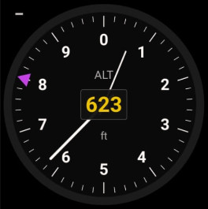
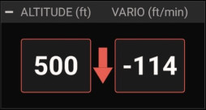

⛰
Altimètre
Altitude GPS · altitude à suivre (bug magenta)
ANLALT · analogique
NUMALT · Altimètre/Variomètre (50%-1L)


Possibilités
- Affiche l'altitude GPS.
- Altitude à suivre matérialisée par un curseur / bug magenta.
- NUMALT combine Altitude + Vario : une flèche centrale, bordures vertes/rouges selon montée/descente.
- Unité pieds (ft) ou mètres (m) selon Réglages ▸ Cockpits : la graduation du cadran et la valeur numérique suivent l'unité choisie (elles restent cohérentes).
Gestes
– Appui long : saisir l'altitude à suivre
·· Double-tap : —